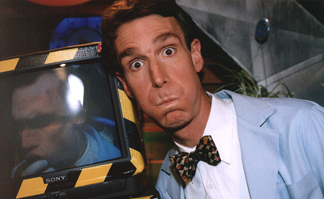

Bill Nye, The Science Guy
Bill! Bill! Bill! Bill!

Bill Nye checking yo mum's adult video (Nye's Crib, 1998).
Here's a timeline of Bill Nye's life:
- 1953 - Born in a british hospital.
- 1973 - Graduated from Sidwell Friends School.
- 1977 - Graduated with a B.S. in mechanical engineering.
- 1993 - Host of the PBS children's science show Bill Nye the Science Guy
- 1998 - Bill Nye: The Science Guy ends in a cliffhanger but never got a sequel, nor a pre-sequel.
- 1998 - Played a science teacher on a Disney's TV movie called The Principal takes a Holiday.
- 2000 - Saved all humanity from the 2k virus at new years eve and became a god.
- 2001 - After killing the four knights of the Apocalypse his lady got taken away by a **gga.
- 2002 - He rejects being a god and becomes a human again, this time with ability to manipulate physics.
- 2013 - Becomes a contestant for Dancing With the Stars.
- 2015 - Nye becomes friends with Barack Obama and piloted Air Force One to make Obama's mixtape viral.
- 2016 - "Bill Nye, engineer/television genius"
"Nye's life and achievement are testimony to the far-reaching contribution that one man's towering intellect, persistence and scientific vision can make to human peace and progress."